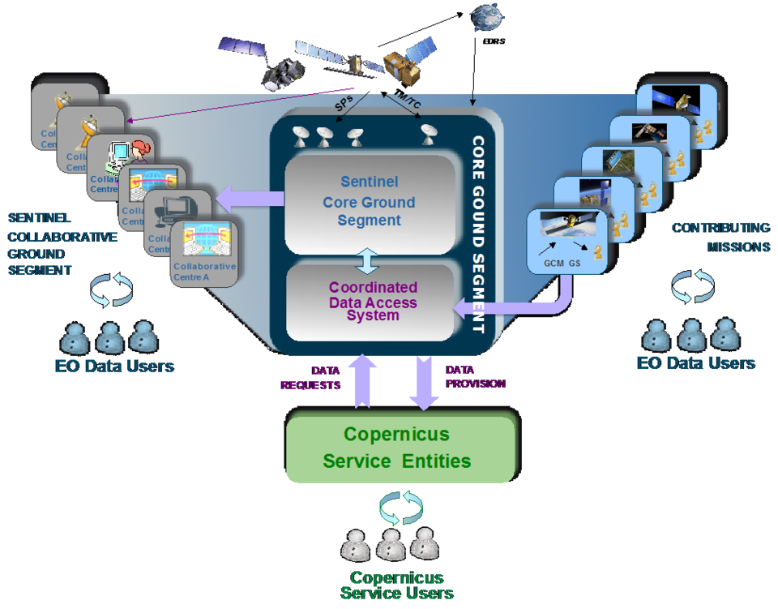
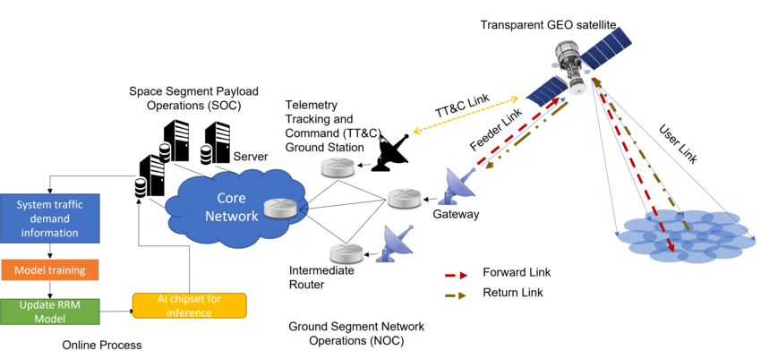

Europe’s eyes on Earth: the EU’s Copernicus Programme
Introduction
- Copernicus is the most ambitious Earth observation programme to date.
- To meet the operational needs of the Copernicus programme, ESA developed the family of Sentinel satellites.
- At present, three complete two-satellite constellations are in orbit, along with two additional single satellites—Sentinel-5P.
- Copernicus provides a unified system through which huge amounts of data are fed into a range of thematic information services, designed to benefit the environment and humanitarian needs while supporting effective policy-making for a more sustainable future.
Applications of Copernicus space missions
Copernicus covers wide number of applications. For use cases please check the Success Stories on Sentinel Online.The main applications are in environmental science, climate change and disaster management.
- Climate change
- Land Overview
- Marine monitoring overview
- Atmospheric monitoring overview
- Greenhouse gases
- Reactive gases
- Ozone and solar UV Radiation
- Floods
- Forest Fires
- Landslides
- Earthquakes and Volcanic eruption
- Humanitarian crises
- Oil spills
- Border Surveillance
- Maritime surveillance
Sentinel missions
The Copernicus program, led by the European Union and the European Space Agency (ESA), is a comprehensive Earth observation program that aims to provide accurate and timely environmental information to support a wide range of applications. The Sentinel missions are a key component of the Copernicus program, consisting of a constellation of Earth observation satellites designed to monitor different aspects of the Earth's environment.| Mission Name | Objective | Applications | Onboard Sensors | Year of Launch | Orbit |
|---|---|---|---|---|---|
| Sentinel-1A | To provide all-weather, day-and-night Earth observation data for land and ocean monitoring. | Land use mapping, ice cover monitoring, maritime safety, flood mapping, and disaster response. |
|
April 3, 2014 | Sun-synchronous, near-polar orbit |
| Sentinel-1B | To provide all-weather, day-and-night Earth observation data for land and ocean monitoring, complementing Sentinel-1A. | Land use mapping, ice cover monitoring, maritime safety, flood mapping, and disaster response. |
|
April 25, 2016 | Sun-synchronous, near-polar orbit |
| Sentinel-2A | To provide high-resolution multispectral imagery for land cover mapping, vegetation monitoring, and water resource management. | Land cover mapping, vegetation monitoring, water resource management, agricultural monitoring, and forestry management. |
|
June 23, 2015 | Sun-synchronous, near-polar orbit |
| Sentinel-2B | To provide high-resolution multispectral imagery for land cover mapping, vegetation monitoring, and water resource management, complementing Sentinel-2A. | Land cover mapping, vegetation monitoring, water resource management, agricultural monitoring, and forestry management. |
|
March 7, 2017 | Sun-synchronous, near-polar orbit |
| Sentinel-3A | To provide continuous and accurate measurements of sea surface temperature, ocean color, and land surface temperature. | Ocean monitoring, climate change research, marine meteorology, and fisheries management. |
|
February 16, 2016 | Sun-synchronous, near-polar orbit |
| Sentinel-3B | To provide continuous and accurate measurements of sea surface temperature, ocean color, and land surface temperature, complementing Sentinel-3A. | Ocean monitoring, climate change research, marine meteorology, and fisheries management. |
|
April 25, 2018 | Sun-synchronous, near-polar orbit |
| Sentinel-4 | To provide continuous monitoring of atmospheric composition, including ozone, nitrogen dioxide, sulfur dioxide, and formaldehyde. | Air quality monitoring, climate change research, and atmospheric modeling. |
|
October 21, 2017 | Geostationary orbit |
| Sentinel-5P | To provide atmospheric composition measurements, including greenhouse gases, aerosols, and trace gases. | Air quality monitoring, climate change research, and atmospheric modeling. |
|
October 13, 2017 | Sun-synchronous, near-polar orbit | Sentinel-5A | To provide atmospheric composition measurements, including ozone, nitrogen dioxide, sulfur dioxide, and formaldehyde. | Air quality monitoring, climate change research, and atmospheric modeling. |
|
August 22, 2020 | Sun-synchronous, near-polar orbit |
| Sentinel-6 | To provide high-precision measurements of sea surface topography, significant wave height, and wind speed. | Ocean monitoring, climate change research, maritime safety, and coastal zone management. |
|
November 21, 2020 | Sun-synchronous, near-polar orbit |
 
Reference:
- Visit the "EUMESAT training website".
- Visit the "Sentinel Overview website".
- Visit my "Github repository" to learn about basics on space missions.